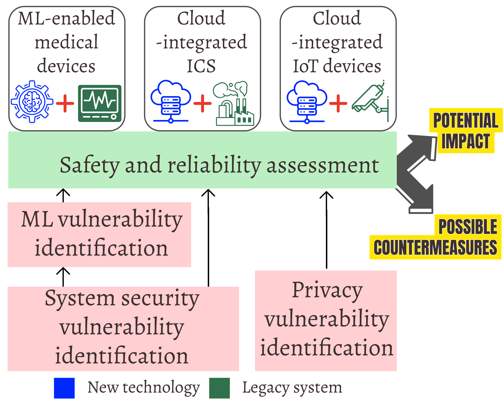

Research Overview
I investigate the security and privacy of modern networked systems, focusing on those that integrate their legacy system components with emerging technologies. Such integrations are increasingly common—embedding Machine Learning (ML)-based software into legacy medical devices, integrating cloud-based services with industrial automation systems and IoT applications, or incorporating predictive streaming techniques into services like Netflix. My research reveals that such integrations create new vulnerabilities that traditional security and privacy measures were not designed to address. These vulnerabilities arise from fundamental mismatches between the legacy design assumptions, and the security, privacy, performance, and interoperability requirements of modern technologies, and they often invalidate legacy threat models and trust boundaries.
Yet, these modern technologies are meant to benefit society in substantial ways. AI/ML-driven medical diagnosis and treatment enable quick, low-cost access to life-saving treatments, remote monitoring supports continuous patient care, automation reduces the physical burden on workers, and cloud-based analytics allow organizations to scale while lowering operational costs. My long-term vision is to ensure that this technological progress remains secure, safe, and trustworthy, enabling society to reap its benefits without any hidden risks. The overarching goal of my research, therefore, is to determine whether systems retain their security, safety, and privacy guarantees when modern technologies are integrated, and if not, to design practical, minimally disruptive strategies to restore them.
Doctoral Research: Encrypted Web Traffic Analysis
Driven by growing concerns about network surveillance, in my early research works, I examined encrypted traffic analysis (ETA)-based attacks, a class of attacks that infer a user's online activities only from their encrypted traffic metadata (packet size, direction, and inter-packet timings) without breaking encryption or compromising the communication endpoints. This enables long-term, stealthy surveillance by on-path adversaries positioned anywhere along the network path (e.g., a compromised ISP or backbone router) between a web server and its users.

Early ETA techniques aimed at webpage-level inference over HTTPS were built on restrictive assumptions: small sites, no embedded cookies, fixed navigation paths, and homogeneous client environments. They relied on supervised ML models trained and evaluated on such controlled settings. These models fail to generalize in modern web ecosystems, with thousands of pages, cookies, heterogeneous browsers/OSes, and diverse caching states. To overcome these limitations, we developed Snoopy (IEEE TDSC'22), an ETA framework that uses statistical techniques to approximate how each webpage's encrypted-traffic fingerprint varies across cache and cookie settings, browser/OS combinations, and navigation paths. In Depending on HTTP/2 for Privacy? (DSN'20), we debunked the belief that HTTP/2's parallel request processing inherently protects encrypted traffic from ETA attacks. In White Mirror (ACM SIGCOMM'19 Posters and Demos), we showed that Netflix's predictive streaming for interactive videos leaks users' on-screen choices via encrypted traffic metadata.
Postdoctoral Research: Security of Safety-Critical Systems
During my postdoctoral research at UBC, I built on the insights gained during my PhD while broadening my research scope in two directions. First, I extended ETA techniques on domains beyond web applications, for example, in modern (cloud-integrated) industrial control systems (ICS). Second, I examined how the integration of modern technologies with legacy systems introduces new security and privacy risks beyond ETA, that require revisiting risk assessment techniques and designing new security measures. I focused on two representative domains undergoing rapid technological modernization: medical devices using machine learning (ML) for personalizing treatment or enhancing diagnosis accuracy, and data-intensive IoT applications.

In our recent work, we showed that cloud-connected ICS remain vulnerable to ETA-based attacks despite VPNs and standard defenses. We demonstrated a stealthy blackhole attack that analyzes VPN traffic metadata to selectively drop safety-critical packets, thereby disrupting operations. In ML-enabled medical devices, we identified high-impact attack vectors stemming from complex, multi-vendor ecosystems that supply data to ML pipelines. Our systematic assessment of commercial devices showed that vulnerabilities in peripheral components can enable stealthy inference-time false data injection attacks, potentially endangering patients. To reduce the high cost of expert-driven assessments, we developed MedAIScout and SAM, LLM-assisted tools that partially automate vulnerability discovery. We further showed that conventional anomaly detectors perform poorly against evasion attacks in medical ML due to large inter-patient variability. Finally, for IoT systems deployed in public and regulated environments, we developed Turnstile, a hybrid information flow control framework that combines static taint analysis with dynamic tracking to detect and constrain privacy-sensitive data flows.
A central insight emerging from this research is that existing security measures often do not cover the expanded attack surface when modern technologies are retrofitted into legacy systems. This underscores the need for security research that involves cross-layer, domain-aware understanding of modern safety-critical systems. Effective defense in these environments requires not just patching vulnerabilities or hardening networks, but a fundamental rethinking of threat models, validating system behavior, and designing domain-specific, safety-aligned security mechanisms.